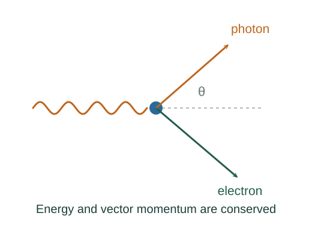

Derive the Compton wavelength shift
A photon scattered by a free electron exchanges both energy and momentum with it. Eliminating the electron recoil from those conservation equations gives a wavelength shift dependent on scattering angle.
What the symbols mean
λ, λ′: initial and final photon wavelengths; θ: photon scattering angle; me: electron rest mass; E, E′: photon energies.
When this applies
Initially stationary free electron, one photon scattering event, relativistic conservation of energy and momentum. Bound-electron effects are neglected.
Developing the argument

Conserve total energy
The electron initially has rest energy mec². Its final total energy Ee is whatever remains after the photon loses energy.
Conserve vector momentum
The recoil electron carries the difference between initial and scattered photon momenta. Squaring the vector triangle introduces the photon scattering angle.
Use the electron invariant relation
Substitute Ee into Ee² = pe²c² + me²c⁴. Expand and cancel the common E², E′² and me²c⁴ terms.
A closer lookDerive the energy–momentum invariant ↗Convert energies into wavelengths
Divide by EE′, then substitute 1/E = λ/(hc). The final minus initial wavelength is proportional to 1 − cos θ.
A worked example
At θ = 90°, the shift equals the electron Compton wavelength h/(mec) ≈ 2.43 pm. At backscattering it is twice that value.
Derivation behind this calculation ↗A point to keep straight
The electron recoil must be treated relativistically for the general result. The photon loses energy as its wavelength increases.
Check the assumptions and derivation ↗